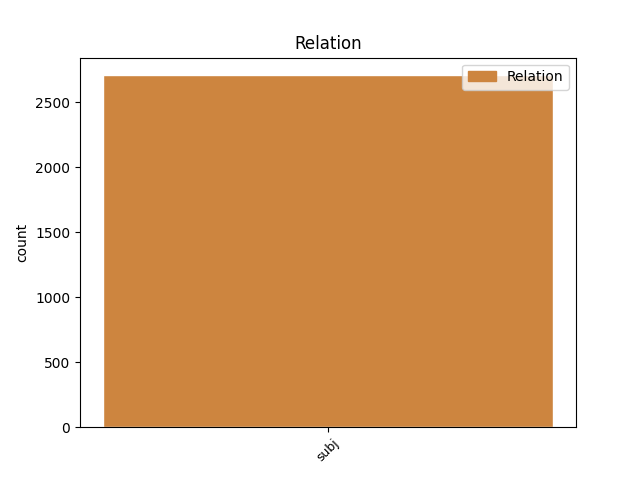
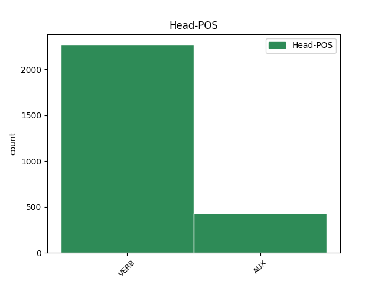
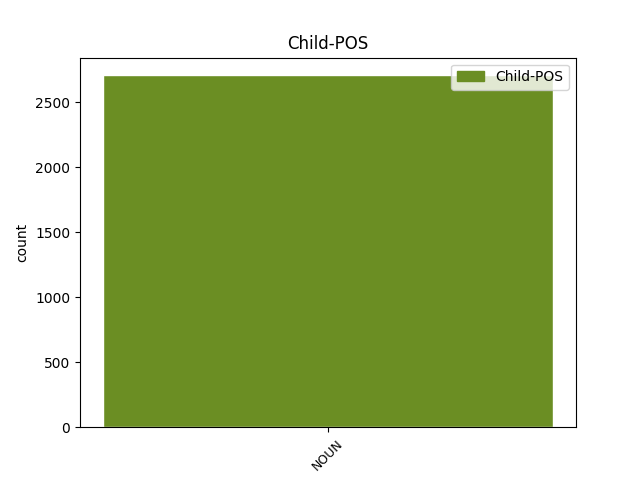

Distribution of features within this leaf



Agreement Rules sorted by frequency.
- When the dependent token is the subject(subj) of the head token, and the dependent token is NOUN.
1 Polícia polícia NOUN SSfs1 Case=Nom|Gender=Fem|Number=Sing 3 subj _ _
2 včera _ _ _ _ 0 _ _ _
3 oznámila oznámiť VERB VLdscf+ Aspect=Perf|Gender=Fem|Number=Sing|Polarity=Pos|Tense=Past|VerbForm=Part 0 _ _ _
4 , _ _ _ _ 0 _ _ _
5 že _ _ _ _ 0 _ _ _
6 Korac _ _ _ _ 0 _ _ _
7 pri _ _ _ _ 0 _ _ _
8 pokuse _ _ _ _ 0 _ _ _
9 o _ _ _ _ 0 _ _ _
10 zadržanie _ _ _ _ 0 _ _ _
11 spáchal _ _ _ _ 0 _ _ _
12 samovraždu _ _ _ _ 0 _ _ _
13 . _ _ _ _ 0 _ _ _
Disagree Examples:
1 Koruna koruna NOUN SSfs1 Case=Nom|Gender=Fem|Number=Sing 10 subj _ _
2 Sv _ _ _ _ 0 _ _ _
3 . _ _ _ _ 0 _ _ _
4 Štefana _ _ _ _ 0 _ _ _
5 a _ _ _ _ 0 _ _ _
6 ostrihomský _ _ _ _ 0 _ _ _
7 Primas _ _ _ _ 0 _ _ _
8 Hungariae _ _ _ _ 0 _ _ _
9 sa _ _ _ _ 0 _ _ _
10 stali stať VERB VLdpco+ Aspect=Perf|Number=Plur|Polarity=Pos|Tense=Past|VerbForm=Part 0 _ _ _
11 symbolom _ _ _ _ 0 _ _ _
12 Uhorského _ _ _ _ 0 _ _ _
13 štátu _ _ _ _ 0 _ _ _
14 . _ _ _ _ 0 _ _ _
1 Základnými _ _ _ _ 0 _ _ _
2 požiadavkami _ _ _ _ 0 _ _ _
3 na _ _ _ _ 0 _ _ _
4 všetky _ _ _ _ 0 _ _ _
5 druhy _ _ _ _ 0 _ _ _
6 podložiek _ _ _ _ 0 _ _ _
7 na _ _ _ _ 0 _ _ _
8 spanie _ _ _ _ 0 _ _ _
9 sú byť AUX VKepc+ Aspect=Imp|Mood=Ind|Number=Plur|Person=3|Polarity=Pos|Tense=Pres|VerbForm=Fin 0 _ _ _
10 tepelná _ _ _ _ 0 _ _ _
11 izolácia izolácia NOUN SSfs1 Case=Nom|Gender=Fem|Number=Sing 9 subj _ _
12 a _ _ _ _ 0 _ _ _
13 izolácia _ _ _ _ 0 _ _ _
14 od _ _ _ _ 0 _ _ _
15 vlhkosti _ _ _ _ 0 _ _ _
16 . _ _ _ _ 0 _ _ _
1 Tá _ _ _ _ 0 _ _ _
2 relácia relácia NOUN SSfs1 Case=Nom|Gender=Fem|Number=Sing 15 subj _ SpaceAfter=No
3 , _ _ _ _ 0 _ _ _
4 i _ _ _ _ 0 _ _ _
5 keď _ _ _ _ 0 _ _ _
6 varovala _ _ _ _ 0 _ _ _
7 pred _ _ _ _ 0 _ _ _
8 známymi _ _ _ _ 0 _ _ _
9 dôsledkami _ _ _ _ 0 _ _ _
10 zbožšťovania _ _ _ _ 0 _ _ _
11 jedla _ _ _ _ 0 _ _ _
12 , _ _ _ _ 0 _ _ _
13 ma _ _ _ _ 0 _ _ _
14 definitívne _ _ _ _ 0 _ _ _
15 presvedčia presvedčiť VERB VKdpc+:q Aspect=Perf|Mood=Ind|Number=Plur|Person=3|Polarity=Pos|Tense=Pres|Typo=Yes|VerbForm=Fin 0 _ _ _
16 o _ _ _ _ 0 _ _ _
17 tom _ _ _ _ 0 _ _ _
18 , _ _ _ _ 0 _ _ _
19 čo _ _ _ _ 0 _ _ _
20 som _ _ _ _ 0 _ _ _
21 už _ _ _ _ 0 _ _ _
22 dávnejšie _ _ _ _ 0 _ _ _
23 tušil _ _ _ _ 0 _ _ _
24 . _ _ _ _ 0 _ _ _
1 Príčiny _ _ _ _ 0 _ _ _
2 ochorenia _ _ _ _ 0 _ _ _
3 úzko _ _ _ _ 0 _ _ _
4 súvisia _ _ _ _ 0 _ _ _
5 s _ _ _ _ 0 _ _ _
6 nezdravým _ _ _ _ 0 _ _ _
7 životným _ _ _ _ 0 _ _ _
8 štýlom _ _ _ _ 0 _ _ _
9 , _ _ _ _ 0 _ _ _
10 svoju _ _ _ _ 0 _ _ _
11 významnú _ _ _ _ 0 _ _ _
12 úlohu _ _ _ _ 0 _ _ _
13 zohrávajú zohrávať VERB VKepc+ Aspect=Imp|Mood=Ind|Number=Plur|Person=3|Polarity=Pos|Tense=Pres|VerbForm=Fin 0 _ _ _
14 alkohol alkohol NOUN SSis1 Animacy=Inan|Case=Nom|Gender=Masc|Number=Sing 13 subj _ SpaceAfter=No
15 , _ _ _ _ 0 _ _ _
16 fajčenie _ _ _ _ 0 _ _ _
17 , _ _ _ _ 0 _ _ _
18 nedostatok _ _ _ _ 0 _ _ _
19 pohybu _ _ _ _ 0 _ _ _
20 , _ _ _ _ 0 _ _ _
21 nadváha _ _ _ _ 0 _ _ _
22 a _ _ _ _ 0 _ _ _
23 obezita _ _ _ _ 0 _ _ _
24 , _ _ _ _ 0 _ _ _
25 stres _ _ _ _ 0 _ _ _
26 , _ _ _ _ 0 _ _ _
27 poprípade _ _ _ _ 0 _ _ _
28 nedostatok _ _ _ _ 0 _ _ _
29 zdravých _ _ _ _ 0 _ _ _
30 potravín _ _ _ _ 0 _ _ _
31 . _ _ _ _ 0 _ _ _
1 Osvetovú _ _ _ _ 0 _ _ _
2 kampaň _ _ _ _ 0 _ _ _
3 Nádej _ _ _ _ 0 _ _ _
4 pre _ _ _ _ 0 _ _ _
5 život _ _ _ _ 0 _ _ _
6 podporili podporiť VERB VLdpco+ Aspect=Perf|Number=Plur|Polarity=Pos|Tense=Past|VerbForm=Part 0 _ _ _
7 Svetová _ _ _ _ 0 _ _ _
8 zdravotnícka _ _ _ _ 0 _ _ _
9 organizácia organizácia NOUN SSfs1 Case=Nom|Gender=Fem|Number=Sing 6 subj _ SpaceAfter=No
10 , _ _ _ _ 0 _ _ _
11 minister _ _ _ _ 0 _ _ _
12 zdravotníctva _ _ _ _ 0 _ _ _
13 , _ _ _ _ 0 _ _ _
14 Slovenská _ _ _ _ 0 _ _ _
15 geriatrická _ _ _ _ 0 _ _ _
16 a _ _ _ _ 0 _ _ _
17 gerontologická _ _ _ _ 0 _ _ _
18 spoločnosť _ _ _ _ 0 _ _ _
19 , _ _ _ _ 0 _ _ _
20 Slovenská _ _ _ _ 0 _ _ _
21 lekárska _ _ _ _ 0 _ _ _
22 spoločnosť _ _ _ _ 0 _ _ _
23 , _ _ _ _ 0 _ _ _
24 Slovenská _ _ _ _ 0 _ _ _
25 internistická _ _ _ _ 0 _ _ _
26 spoločnosť _ _ _ _ 0 _ _ _
27 a _ _ _ _ 0 _ _ _
28 Slovenská _ _ _ _ 0 _ _ _
29 kardiologická _ _ _ _ 0 _ _ _
30 spoločnosť _ _ _ _ 0 _ _ _
31 . _ _ _ _ 0 _ _ _